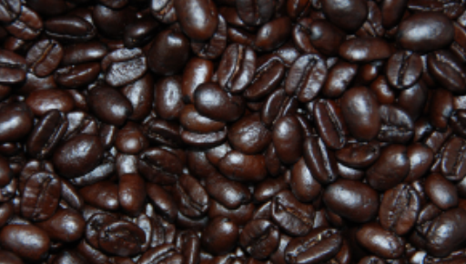

Kopi-kopi dark roast (dan level di atasnya semacam Italian, Vienna atau French roast), umumnya dilakukan jika kopi tersebut akan ditambahkan lagi dengan campuran susu, gula dan sebagainya menjadi entah cappuccino, latte, flat white dan sebagainya. Jarang sekali kopi seduh manual, alias manual brew, yang menggunakan level sangrai ini. Kopi dark roast pada dasarnya hampir tidak lagi menyimpan karakter apapun selain rasa gosong dan pahit yang hangus. Sekiranya pun ada karakter asli tersisa, itu pun sudah sangat sedikit sekali. Keunggulan kopi dark roasted ini, menurut saya, terlerak pada aromanya yang wangi dan harum begitu diseduh dengan air panas.Untuk mengenali biji kopi dark roast kita bisa melihat dari biji kopinya. Biasanya kopi yang disangrai dalam level ini terlihat sangat mengkilap karena oil atau minyak (kopi) yang dikandungnya dikeluarkan cukup banyak akibar proses sangrai yang lama.